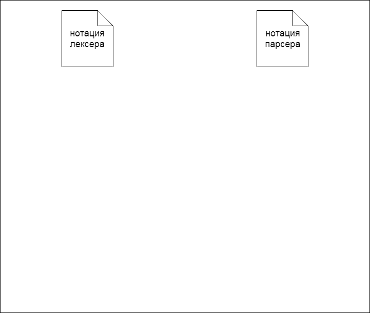

Введение
В современной индустрии информационных технологий базы данных играют одну из главных ролей при построении автоматизированных систем любой сложности и масштаба. Качество проектирования и построения, а также эффективность использования базы данных напрямую влияет на общее функционирование системы или программного комплекса.
Каждая база данных определяется структурой, которая является не чем иным как набором инструкций на языке SQL, а точнее одном из его диалектов. Тем самым, процесс анализа качества структуры базы данных заключается в анализе ее SQL-кода.
Уже существуют системы, выполняющие данную задачу для других языков программирования, но именно создание системы автоматизированного анализа качества структуры базы данных (САБД) позволит разработчикам и администраторам значительно увеличить эффективность своей работы и вовремя реагировать на ошибки еще на этапе построения баз данных.
Актуальность
Упомянутый ранее процесс анализа качества структуры базы данных по своей сути является статическим анализом SQL-кода. В современном мире разработки программного обеспечения статический анализ является залогом успеха всего проекта. Правильное и своевременное встраивание этого этапа в процесс написания кода может значительно сэкономить как временные, так и финансовые ресурсы. Учитывая, насколько широко, на данный момент, используются СУБД с поддержкой SQL, инструмент, позволяющий комплексно оценить качество и связность написанного SQL-кода, может быть крайне востребован. Важно отметить, что пропорционально росту программной системы растет и количество ошибок, которые могут быть допущены при написании исходного кода, поэтому в сфере разработки баз данных, где нередко можно встретить крупные программные комплексы, статический анализ особенно актуален.
Цели и задачи исследования
Цель данной работы состоит в проектировании и построении системы, позволяющей проводить автоматизированный анализ структуры базы данных, описанной в виде SQL-инструкций. По результатам работы над системой должна быть решена задача предоставления возможности разработчику встраивания ее в процесс описания и построения структуры базы данных и получения результатов анализа в виде перечня уязвимостей, ошибок или рекомендаций по улучшению.
В ходе работы над проектом планируется провести: анализ предметной области и постановка задачи; анализ существующих решений данной задач; анализ методов предварительной подготовки кода для последующей обработки, обзор и выбор соответствующих этому этапу инструментов; определение критериев структуры базы данных для проведения анализа; анализ методов обработки синтаксического дерева полученного на этапе подготовки кода [10]; обзор существующих методов статического анализа, выбор оптимальных для решения поставленной задачи и их применения; внедрение разработанной системы в процесс построения баз данных и ее практическое применение.
Анализ существующих мировых решений
Из существующих систем автоматизированного анализа структур реляционных баз данных можно выделить продукт , предназначенный для СУБД Microsoft Office Access [6].
Данная программная система работает как дополнительная надстройка над Microsoft Access и: формирует подробную и детализированную документацию по анализируемой базе данных, со всевозможными ссылками на ее объекты или их SQL-код; проводит подробный анализ объектов и связей между ними, выявляя ошибки различных типов, а также возможные средства их устранения; оценивает потери производительности и предлагает варианты решения обнаруженных проблем; формирует диаграммы потоков данных и объектов, позволяющие более наглядно представить структуру базы данных.
Также стоит отметить компанию SonarSource с ее системами для анализа SQL-кода, в частности для TSQL и PL/SQL диалектов [7]. Эта компания имеет в своем активе разработки анализаторов кода по большинству ныне популярных языков программирования. Все они соответствуют единому интерфейсу применения и используются в веб-приложении SonarQube, которое позволяет манипулировать всеми нюансами статического анализа: задавать или изменять правила и критерии анализа, просматривать результаты анализа, классифицированные по категориям и получать количественные оценки качества анализируемого кода.
В контексте СУБД Oracle нужно упомянуть Visual Expert. Данное программное решение поставляется в виде как настольного так и серверного приложения. Основным его направлением является визуализация составляющих структуры базы данных, удобная навигация и поиск по ним. Но в перечне функционала продукта также заявлен статический анализ PL/SQL-кода.
Анализ существующих локальных решений
Среди проектов выпускников ДонНТУ в области анализа и оптимизации работы с базами данных стоит выделить магистерскую работу Заславского В.А. «Система оптимизации клиентских запросов к серверам распределённой базы данных» [9].
В этой работе речь идет не о статической структуре базы данных, а о динамической составляющей работы с ней – клиентских запросах. Разработанная здесь система использует «муравьиный алгоритм» для поиска оптимального плана запроса, тем самым оптимизируя исходный запрос.
Отличительной чертой проекта является то, что основное внимание автора уделено работе с распределенными базами данных и соответственно распределенными запросами. Упор при оптимизации делается на сетевые затраты, а не на реляционные особенности базы данных и запроса. Отчасти, это можно считать недостатком, но в целом это является спецификой проекта и проведенных исследований.
Основные понятия и алгоритм работы системы
Для того, чтобы более подробно раскрыть сущность системы автоматизированного анализа качества структуры базы данных, нужно дать определения основным понятиям, встречающихся на том или ином этапе работы данного программного комплекса.
Статический анализ кода – это процесс, заключающийся в выявлении логических и стилистических ошибок в исходном коде. Статический анализ в какой-то степени является аналогом процесса обзора кода (code review), но в автоматизированном виде. Обычно на практике используются оба подхода, так как каждый имеет ряд своих достоинств [3].
Стоит отметить, что сам процесс анализа кода является завершающим этапом цепочки последовательных операций. В его основе лежат процедуры лексического и синтаксического разбора, реализация которых напрямую зависит от специфики текста, в данном случае программного кода.
Лексический анализ или разбор представляет собой процесс анализа и распознавания определенных элементов или их групп (лексем) во входном наборе или последовательности символов, для их последующей идентификации и выделении токенов (токенизация). В общем случае в процессе лексического анализа входными данными является поток символов, а выходными – набор классифицированных токенов (классификация может иметь различные уровни сложности) [1].
Синтаксическим анализом называется процесс обработки набора токенов (в общем случае лексем) определенного формального языка с его грамматикой. Данный процесс выполняется синтаксическим анализатором (парсером), который принимает на вход результаты работы предшествующего лексического анализа. Выходными данными синтаксического анализа является синтаксическое дерево или дерево разбора, представляющее из себя всю синтаксическую структуру анализируемой последовательности символов [2].
Связка из лексического и синтаксического анализатора используется во многих областях программирования и не только, но ручное их написание является достаточно трудоемким процессом, поэтому во многих программных продуктах, компиляторах, интерпретаторах и т.д. используются генераторы анализаторов [8].
Генераторы лексических и синтаксических анализаторов принимают на вход лексическую и синтаксическую структуру языка в некотором формальном представлении, на выходе же мы получаем исходный код лексера и парсера на одном из языков программирования (язык зависит от выбранного генератора).
Как видно, анализ SQL-кода структуры базы данных состоит из нескольких последовательных преобразований исходного кода и дальнейшей его обработки. Полный алгоритм работы САБД приведен на рисунке 1.

Рисунок 1 - Полный алгоритм работы САБД(анимация: 5 кадров, циклов повторения – 5, время между кадрами – 0.8 с., размер 58 Кб)
Техники статического анализа
Одной из наиболее важных техник статического анализа кода является анализ потоков данных. Это метод сбора информации о возможном наборе вычисленных значений и вариантах их использования в различных точках программы [4]. Данные, полученные в результате этого процесса, часто используются при оптимизации программы. Данный процесс возможен благодаря построению и анализу графа потока управления программой (ГПУ) (рис 2.).

Рисунок 2 - Граф потока управления программой
ГПУ является представлением с использованием графа всех путей выполнения программы. В графе потока управления каждый узел представляет базовый блок, то есть прямолинейный фрагмент кода без каких-либо переходов. Направленные ребра используются для представления связей и переходов между базовыми блоками в потоке управления. В большинстве нотаций есть два специально обозначенных блока: входной блок, через который управление входит в граф потока, и выходной блок, через который выходит весь поток управления [5].
Анализ подобный структуры позволяет определить места вычисления значений определенных переменных и выявить блоки кода, в которых эти значения используются. Таким образом, можно проследить путь переменных и их значений по программе и выявить уязвимости или возможности для оптимизации.
Также стоит отметить технику поиска по соответствию шаблону (pattern matching). Она заключается в составлении перечня определенных антипаттернов использования тех или иных конструкций языка и выявлении в исходном коде фрагментов, им соответствующих.
Для языка SQL в контексте описания структуры базы данных можно привести пример выявления стилистических и логических несоответствий методом сопоставления с шаблоном. На рисунке 3 представлено два варианты описания таблиц. В первом случае допущена логическая ошибка, так как поле таблица «users» неявно ссылается на таблицу «roles» - отсутствует внешний ключ. Во втором случае допущена стилистическая ошибка, так как внешний ключ создан, но имя поля задано несоответственно стандартам.

Рисунок 3 - Ошибки в структуре базы данных
Подобным образом можно проанализировать любое формализованное правило. Отталкиваясь от спецификации SQL и сформированных обществом разработчиков рекомендаций можно сформировать необходимый перечень этих правил, для эффективной работы автоматизированной системы статического анализа.
Выводы
В данной работе были описаны основные понятия и предмет магистерского проекта.
Был проведен анализ существующих решений, по итогам которого можно сделать вывод, что на данный момент универсальных решений по анализу качества структуры базы данных в контексте любого диалекта SQL нет.
Также были рассмотрены техники статического анализа кода, которые будут применены при разработке САБД. Перечень применяемых техник необходимо будет расширить для покрытия аспектов анализа, упущенных в существующих системах.
По результатам проведенной работы планируется продолжение исследований и практическое применение достижений.
Список источников
1. Хантер Р. / Основные концепции компиляторов / 2002г. – 256с.
2. А. Ахо, Дж. Ульман. / Теория синтаксического анализа, перевода и компиляции / 1978г. – 614с.
3. William B. / Database Code Analysis / Электронный ресурс – Режим доступа: https://www.red-gate.com/simple-talk/sql/database-devops-sql/database-code-analysis/
4. Khedker U., Sanyal A., Sathe B. / Data Flow Analysis: Theory and Practic / 2009г. – 328с.
5. Kam, John B., Ullman J. / Global Data Flow Analysis and Iterative Algorithms / Электронный ресурс – Режим доступа: http://rsim.cs.uiuc.edu/arch/qual_papers/compilers/kam.pdf
6. Microsoft Total Access Analyzer / Электронный ресурс – Режим доступа: http://masters.donntu.org/2016/fknt/safonov/diss/index.htm
7. Sonarsource / Электронный ресурс – Режим доступа: https://www.sonarsource.com/
8. Генераторы лексических и синтаксических анализаторов / Электронный ресурс – Режим доступа: http://www.kulichki.net/kit/tools/lexparse.html
9. Заславский В.А. / Система оптимизации клиентских запросов к серверам распределённой базы данных / Электронный ресурс – Режим доступа: http://masters.donntu.org/2011/fknt/zaslavskiy/diss/index.htm
10. Введение в теорию трансляторов / Электронный ресурс – Режим доступа: http://bourabai.kz/tpoi/compilers.htm